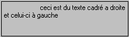

Le format des commandes est : une commande entre < > suivie d'une ou plusieurs valeurs.
Si la valeur contient le caractère < et/ou le caractère >, elle doit obligatoirement être entre quotes (' " ou `).
La valeur peut être alphanumérique ou numérique, la virgule ou le point représentant la virgule décimale.
Remarque
La commande <hog> indique que le contenu de la variable doit être interprété comme étant la description d'un objet graphique. Cette commande est facultative dans le cas de l'objet graphique mais peut être utilisée dans les objets texte de Xwin, dans les entêtes de colonnes de tableaux.
Exemple
ff.graph = "<r>ceci est du texte cadré a droite <s><l>et celui-ci à gauche"
